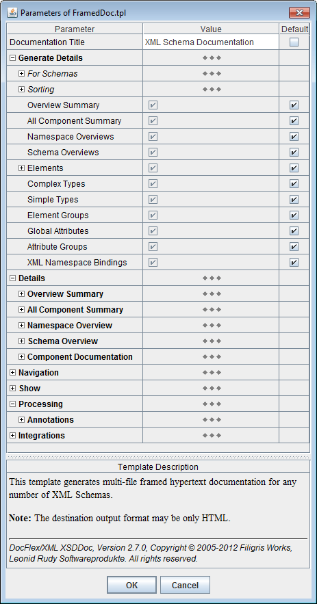
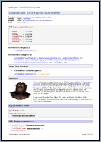

Now, by its performance, the result documentation generator (i.e. the templates plus the template interpreter) may well rival with anything written directly in Java or C++!
However, unlike a general programming language, the template approach gives incredible programming flexibility and integrity. The things that may take days or weeks of programming and debugging in Java or C++ can be done using DocFlex templates just in a few minutes! (Actually, the trick is that any general programming language cannot be optimized universally for every imaginable task. DocFlex, on the contrary, is focused on a specific set of problems that have very much in common. Those common things allow developing a unified solution for them so as to make it reusable in the form of a special tool.)
The performance statistics is the following.
Processing a typical little XML Schema you would normally find in most of applications (e.g. see “Sales Report” sample) on an ordinary modern PC (e.g. based on Intel Pentium 4 or AMD Athlon) may take just a few seconds (most of which will be just launching the JVM itself).
One of the largest XML schemas, for which we have generated a single HTML documentation so far, is “XML Schemas for Eclipse UML2”. That XML schema set (which includes 3 XSD files) defines in total 800+ separately documented components (some of which specify very complicated content models). In the following table you can see the results of the most recent tests -- the generation time of the entire HTML documentation (without diagrams, 849 separate files, 18.5 Mb total size):
| System (Intel Core 2 Duo E6600) | Java 6 (ver 1.6.0_26) | Java 7 (ver 1.7.0) |
|---|---|---|
| Windows XP (Java 32-bit) | 76 sec | 70 sec |
| Windows 7 64-bit (Java 64-bit) | 70 sec | 65 sec |
See also Examples for more demo documentations and statistics about other big XML schemas.
generator.bat).generator.bat).To set the template parameters, click “Params” button. The Parameter Inspector dialog will appear filled with the parameters declared in the selected template as shown on the following screenshot (click on the picture to see a more expanded view):
When you start everything for the first time, all parameters will have their default values specified in the template. As you set some parameters and close the inspector dialog, the values of the parameters you changed will be stored (along with the parameter names) in the generator.config file. Further, the generator will use those values from that file. So will be when you open the Parameter Inspector dialog next time. The template parameters, whose names match those found in the generator.config file, will be initialized with the corresponding values stored in that file. That's why when you want to generate something different than the previous time, you may need to change the template parameters appropriately.
The format options look similar to the template parameters. The difference is that they control general settings specific only to the particular output format (whereas the template parameters control things specific only to the given template application). The support of the output format options is hardcoded in the output generator itself.
When you click “Options” button (with the HTML format selected at that), you will see the HTML Option Inspector dialog, like shown on the screenshot:
The following options may by particularly important for the generation of HTML documentation:
| Option | Comment |
|---|---|
| Output | option group |
|
Generate style sheet file |
When this option is selected, all internal CSS declarations generated by DocFlex
will be stored in a single 'stylesheet.css' file located in the documentation root directory.
Only links to this file will be included in the generated HTML documents.
Although those CSS declarations may look rather gibberish, they are repeating across HTML files. So, when you generate a multi-file (framed) documentation, selecting this option may substantially reduce its overall size as well as speed up the generation. However, in the case of single file documentation, the effect of this option will be just one extra CSS file. So, it is better to be unchecked. |
| Text | option group |
|
Render embedded HTML |
Select this option (together with “Processing | Annotations | Tags | XHTML” template parameter), when you want to show in the generated documentation the XHTML formatting specified in your annotations. |
|
Render line breaks |
Select this option, when you want the line breaks specified in your original annotation texts to be interpreted (with <br> tags) in the generated HTML output. Note: When you use XHTML to format your annotations, this option may need to be unselected. |
generator.bat).
| Parameter | Comment |
|---|---|
| Formatting | parameter group |
| This parameter controls whether the generated output may contain nested tables. XSDDoc templates frequently use tables as layouts in order to fit data better on a page. In certain cases, however, this leads to the situation when one table is nested into a cell of another table. For some RTF reader, this may cause a problem. Although RTF specification since v1.6 does support nested tables (as well as MS Word 2000 and the later), some modern and important RTF readers (such as OpenOffice.org 2.0) break on them. To work around this problem, all XSDDoc templates that use nested tables also contain alternative sections without them. Such sections will be activated instead of the primary ones, when this parameter is unchecked. Although, without nested tables some pieces of the documentation may look less compact and sleek, this still allows generating a quite decently looking output. Please, uncheck this parameter when your destination RTF reader has problems with nested tables! | |
| parameter group | |
| Specify whether to generate page number columns in summary tables. The page numbers are substitution for hyperlinks in printed documentation and help to navigate it. | |
This parameter controls whether to generate cross-reference page numbers,
which look as the following:
Such page numbers are substitution for hyperlinks in printed documentation and help to navigate it.
If you do not need those references (and feel that the generated output is
too littered with them) you may uncheck this parameter.
|
|
| parameter group | |
| These parameters control which documentation blocks should be started from a new page. |
When you click “Options” button (with the RTF format selected at that), you will see the RTF Option Inspector dialog, like shown on the screenshot:
Please, pay attention to the following options:
| Option | Comment | ||||||
|---|---|---|---|---|---|---|---|
| Styles | option group | ||||||
Include paragraph styles |
These two options specify whether paragraph/character styles should be included in the generated RTF.
When the option is selected, for each style defined in templates a corresponding RTF style
will be generated and references to it will be inserted in every location where that style is used.
When the option is unselected, no specific style information will get into the RTF.
However, any formatting specified in the template styles will be used anyway.
You may need to disable the inclusion of style information in some situations,
when the generated RTF is intended primarily for using in non MS Word applications.
Certain RTF readers, although appear to understand most of the RTF settings quite well,
nevertheless, may produce such a mess with the styles imported from an RTF that the result document
may look considerably distorted.
Here are the option values recommended for different destination applications:
|
||||||
| Text | option group | ||||||
Render embedded HTML |
Select this option (together with “Processing | Annotations | Tags | XHTML” template parameter), when you want to show in the generated documentation the XHTML formatting specified in your annotations. | ||||||
Render line breaks |
Select this option, when you want the line breaks specified in your original annotation texts to be interpreted with new lines in the generated RTF output. Note: When you use XHTML to format your annotations, this option may need to be unselected. | ||||||
| Images | option group | ||||||
|
Store graphics in RTF |
Select this option, when you want all images to be stored directly in the generated RTF. In that case, the result will be a single file. If unchecked, the image files will be saved separately in an 'xxx_files' subdirectory near the document. Only references to them will be inserted in the generated RTF output. This may reduce the result file size, particularly when some big images are repeating. See also: How to insert images? | ||||||
| Other options | option group | ||||||
Tune output for MS Word |
When this option is true, the generator will adjust some RTF formatting
settings specifically for MS Word.
Although Microsoft is the originator of RTF format, the MS Word itself appears to have
some oddities of rendering certain RTF settings, even though those settings may well
follow the RTF specification. For instance, when displaying the paragraph or table borders,
their horizontal positions may be shifted (e.g. when MS Word interprets horizontal margins
of a paragraph, it draws the paragraph borders and paddings within the specified margin space
but not within the paragraph content as it might be natural).
To overcome this, in such cases, we adjust the initial dimensions in the opposite way
so as the result formatting would look properly in MS Word (e.g. to make the actual
paragraph margin look as intended the margin width specified in RTF is increased by the
paragraph border and padding widths).
However, when you generate RTF to display it primarily not in MS Word but rather
in different viewers or editors (e.g. OpenOffice.org under Linux), which interpret
the original RTF specification more literally, those specific adjustments may cause
a visible distortion of the intended formatting of the result document.
In such cases, we recommend to uncheck this option.
Values of this option recommended for different destination applications:
|
Let's suppose, we have an XML schema called “Products.xsd”, which contains the following definition:
Now, we want to generate the documentation for that schema and integrate it together with the documentation generated for the “XML Schema for XML Schemas”, which is the schema (found at<xs:element name="ProductId" type="xs:integer"/>
www.w3.org/2001/XMLSchema.xsd)
that defines the W3C XML Schema language itself.
To do this, in the “XML File(s)” field of the Generator Dialog, we should specify the following line:
or the following:Products.xsd http://www.w3.org/2001/XMLSchema.xsd
which is the same."Products.xsd" "http://www.w3.org/2001/XMLSchema.xsd"
After finishing of the generation, we will receive a documentation containing the full details of both “Products.xsd” and “XMLSchema.xsd” schemas. In addition, every type that is defined in “XMLSchema.xsd” and used in “Products.xsd” will be hyperlinked to its Component Documentation generated by “XMLSchema.xsd”. For example:
Moreover, in that case, the Usage Locations Report of the<xs:element name="ProductId" type="xs:integer"/>
"xs:integer" type will also contain mentioning of the "ProductId"
element, which is defined in “Products.xsd” schema and uses this type.
"c:\My XML Projects\schemas\products.xsd"
This should be done both in the
Generator Dialog
and on the generator command line.
<xs:annotation>
element that allows adding comments into any XML Schema.
Precisely, the <xs:annotation>
element is a container of two other elements:
<xs:appinfo>,
which allows adding some additional custom instructions that may be used by a particular application
that processes the schema.
<xs:documentation>,
where your comment text should be actually inserted.
"SalutationType" type using
<xs:annotation>
element:
|
<xs:simpleType name="SalutationType">
<xs:annotation>
<xs:documentation>Complete List of all Salutations</xs:documentation>
</xs:annotation>
<xs:restriction base="xs:string">
<xs:enumeration value="MR."/>
<xs:enumeration value="MS."/>
<xs:enumeration value="MRS"/>
</xs:restriction> </xs:simpleType>
|
<xs:annotation>
element and generate by its content the “Annotation” section of the
Component Documentation. Click
here
to see how it will look.
Almost all XML Schema elements can include
<xs:annotation>
elements (click on the link to see precisely which).
However, not all of them are processed by XSDDoc templates.
Which exactly are processed you can see in this section:
How everything is documented | Annotations | Which annotation elements are processed.
Within the <xs:documentation>
element, you can write any text containing any number of lines.
Note also that some XML markup character must be encoded with the corresponding entities:
| Character | Entity |
|---|---|
< |
< |
& |
& |
> |
> |
For more information about
<xs:annotation>
elements, see the following links:
<xs:documentation>
element (see How to add comments into my XML schema?)
may contain any number of lines.
You may produce the new lines simply for convenience during writing that text.
However, you may also use the new lines as a way to format your comments. In that case, most likely, you will want too see the same lines in the “Annotation” sections of the generated documentation. Click on the following screenshot to see how this may look:
That means that the generator must interpret the line breaks specified within the raw XML with the markup coding appropriate to the given output format (e.g. with "<BR>" in HTML or "\line" in RTF).
To tell the generator to do so, you should invoke the output Format Option Inspector (by clicking the “Options” button in the Generator Dialog) and select in it the “Text | Render line breaks” option.
If you actually do not need to have the line breaks to be interpreted (which may be especially true when you format your comments using XHTML), make sure that “Text | Render line breaks” option is always unchecked.
<xs:annotation>
elements,
this XML Schema documentation generator supports a much more powerful way of formatting your texts and descriptions.
Now, within the
<xs:documentation>
elements, rather than just plain text, you can specify a full-blown XHTML markup!
http://www.w3.org/1999/xhtml
<tag> ... </tag>
<tag/>
(Rather than simply '<tag>', which would be valid in HTML.)
For more information about XHTML, see these links:
|
<xs:schema xmlns:xs="http://www.w3.org/2001/XMLSchema">
...
<xs:annotation>
<xs:documentation xmlns="http://www.w3.org/1999/xhtml">
<h3>Complete List of all Salutations</h3>
Allowed only three values:
<ol>
<li>"MR."</li>
<li>"MS."</li>
<li>"MRS"</li>
</ol>
</xs:documentation>
</xs:annotation>
...
</xs:schema>
|
Here, the xmlns attribute specified in the start tag of the
<xs:documentation>
element switches the default namespace within it to XHTML. That means that any XML elements without namespace prefixes contained in that
<xs:documentation>
will belong to the XHTML namespace.
Now, we can freely use ordinary HTML tags to format our comment!
The <xs:documentation>
element is not the only place where you can switch the default namespace.
You can equally do it in the start tag of any other element. At that, both that element and any other elements
contained in it (if they have no namespace prefixes) will be treated as belonging to the XHTML namespace.
For instance, the above example can be written also in the following way:
|
<xs:schema xmlns:xs="http://www.w3.org/2001/XMLSchema">
...
<xs:annotation>
<xs:documentation>
<div xmlns="http://www.w3.org/1999/xhtml">
<h3>Complete List of all Salutations</h3>
Allowed only three values:
<ol>
<li>"MR."</li>
<li>"MS."</li>
<li>"MRS"</li>
</ol>
</div>
</xs:documentation>
</xs:annotation>
...
</xs:schema>
|
The <div> element here is just a generic structure HTML element
and it encloses all the annotation text with the HTML markup.
However, switch the default namespace is not the only way. Alternatively, you can bind
the XHTML namespace URI to a certain arbitrary prefix (for instance, "xhtml")
in the start tag of the very top XML schema definition element (that is the
<xs:schema>
element itself). Further, you should add that prefix to each HTML tag you use in your annotations.
Here is how our example will look in that case:
|
<xs:schema xmlns:xs="http://www.w3.org/2001/XMLSchema" xmlns:xhtml="http://www.w3.org/1999/xhtml"> ...
<xs:annotation>
<xs:documentation>
<xhtml:h3>Complete List of all Salutations</xhtml:h3>
Allowed only three values:
<xhtml:ol>
<xhtml:li>"MR."</xhtml:li>
<xhtml:li>"MS."</xhtml:li>
<xhtml:li>"MRS"</xhtml:li>
</xhtml:ol>
</xs:documentation>
</xs:annotation>
...
</xs:schema>
|
The XSDDoc templates
are designed so that they recognize the XHTML elements contained in
<xs:documentation>
elements and process them appropriately.
In fact, the templates simply filter all XHTML tags and just reproduce them back with all namespace prefixes removed
(if any were used in the original comment source, as in the previous example).
So, the entire content of an
<xs:documentation>
element produces a piece of normal HTML, which is inserted directly into the generated
HTML output or processed further, in the case of non-HTML output formats (see below).
Here is how such an HTML will look when generated from both of the above examples:
Complete List of all SalutationsAllowed only three values:
|
In the case of the RTF documentation (generated using
PlainDoc.tpl template),
the piece of HTML produced from the content of an
<xs:documentation>
element is processed even further.
All HTML tags are parsed and interpreted with the proper formatting features available in RTF.
Almost all HTML tags (and their attributes) practically usable in documentation comments are processed in that way.
Here's the list of all supported HTML tags:
| Text | <b>, <strong>, <i>, <em>, <code>, <tt>, <u>, <s>, <strike>, <sub>, <sup>, <font>, <br> |
| Paragraphs | <p>, <center>, <div>, <pre>, <h1>, <h2>, <h3>, <h4>, <h5>, <h6>, <blockquote> |
| Lists | <ul>, <ol>, <li>, <dl>, <dt>, <dd> |
| Table | <table>, <tr>, <td>, <th> |
| Other | <hr>, <img>, <a>...</a> |
The result RTF output generated by such an annotation preformatted with XHTML may look as on the following screenshot (click to see the real size page preview):

<img> tag.
Here is how this can be done:
|
<xs:annotation>
<xs:documentation xmlns="http://www.w3.org/1999/xhtml">
The "Valid XHTML 1.0" Icon:
<p/>
<img src="http://www.w3.org/Icons/valid-xhtml10.png"/>
</xs:documentation>
</xs:annotation>
|
After processing such an annotation, the generator will produce the following fragment of HTML:
The "Valid XHTML 1.0" Icon:

|
The images can also be inserted in the RTF output (see the screenshot above).
Please note, the following template parameters and output format options are important for processing of images:
FramedDoc.tpl
and PlainDoc.tpl).
FramedDoc.tpl
and PlainDoc.tpl)
should be true.
<img> tags.
true,
when you generate HTML output and want all images
specified in <img> tags to be automatically copied and stored along with
the result documentation (rather than left referred from it by the original URLs).
<xs:annotation>
elements from the reproduced XML source:
<xs:annotation>
elements because when XHTML tags are used to format annotation texts, the full XML source of such elements may be
so large that it will overwhelm anything else. This will make difficult to understand anything.
true.
false,
unless you want your original line breaks to be interpreted along with your HTML markup.
true to have all images stored directly
in the generated RTF file.
Most likely, the cause of all such odd things may be that some of your input XML schemas are actually invalid (that is, they do not strictly comply with W3C XML Schema specification).
A common mistake is specifying the schema's target namespace and
forgetting to set that namespace to be default within the
<xs:schema>
element. For example, in the following schema definition:
the element 'NAME' specified within the complex type is supposed to have a simple type
'acctholdername', which is defined just below and belongs to the schema's target namespace
"http://www.company.com/project". However, the type attribute of
<xs:element>
element requires a value of xs:QName
type, that is an XML qualified name. Since the default namespace was not assigned in that schema,
what that particular type attribute actually refers to is the 'acctholdername' type
within the global namespace. Such a type has nothing to do with the simple type 'acctholdername'
defined in that schema and will be simply unknown here.
Hence, the whole schema is incorrect and the documentation generated by it will be incorrect too.
However, the situation can be easily fixed. All is needed is to set the default namespace
in the start tag of the
<xs:schema>
element:
Alternatively, a custom namespace prefix may be used, for instance "prj":
|
In fact, XSDDoc templates do not verify the validity of the input XML schemas. The templates have been designed in assumption that the input XML schemas are correct. When the schema is incorrect a certain documentation will be generated still. However, what that documentation will be no one knows... Actually, it may be even more incorrect than the source schema because what exactly processing a particular invalid XML schema will spawn is difficult to predict.
So, before running the documentation generator, we suggest to verify your schemas(s) with an appropriate tool.
For instance, you may use an online XML schema validator found by this link: http://www.w3.org/2001/03/webdata/xsv. Otherwise, you can go to W3C XML Schema home page and look at the “Tools” section: http://www.w3.org/XML/Schema#Tools.
If all your schemas have passed the validation and the errors in the generated documentation still persist, then, indeed, there may be something wrong in the templates (or elsewhere)... In that case, please, let us know by sending an e-mail to: contact@filigris.com.
 |
XML Schema by Eric van der Vlist
|
The “Element Reference Guide” contained in that book gave us some important ideas of how a good XML schema documentation should be organized and what it should include.
Another good book is the following:
 |
Definitive XML Schema, 2nd Edition by Priscilla Walmsley
|
It is the most recent book about XML schemas and it covers XSD 1.1.
| The only problem, it is printed with quite large font and has wide margins on pages, which make it quite voluminous and heavy. If printed normally, the same content would make about 400 pages, as the first book. |